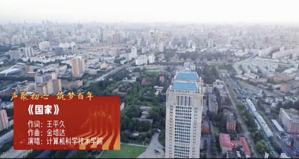
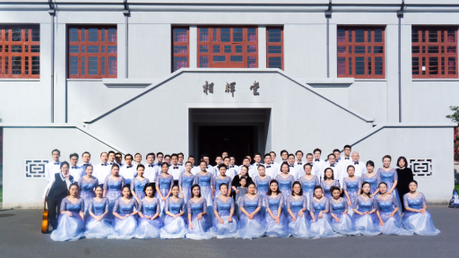
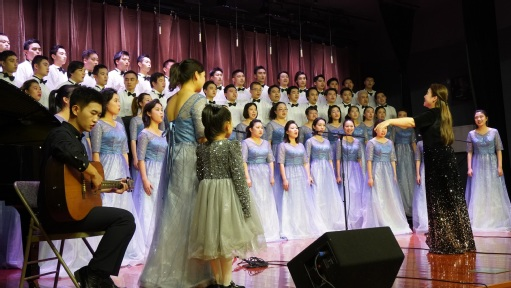
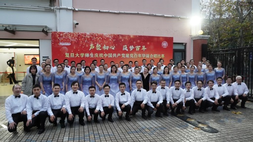
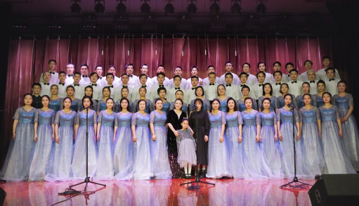
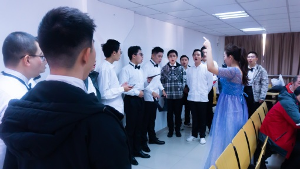
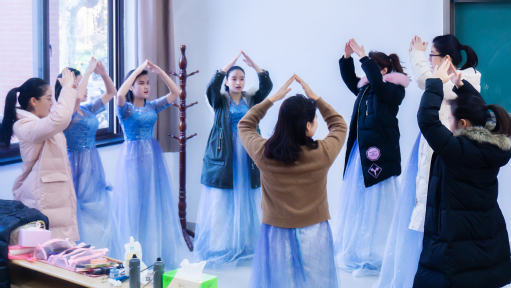
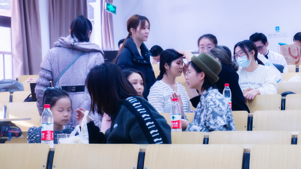
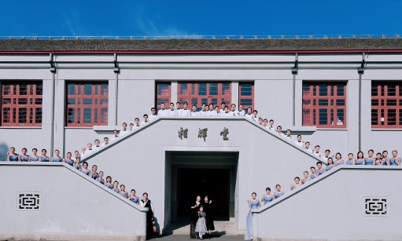

祝贺计算机科学技术学院师生合唱队获得“声聚初心 筑梦百年”——复旦大学师生庆祝中国共产党建党百年华诞合唱比赛 决赛二等奖！


12月12日的预赛中，计算机学院以优异的表现突出重围，进入12月19日的决赛。



壮阔的《国家》、温情的《萱草花》，在两个月时间里，师生们抽出课余时间认真参加排练，训练的足迹遍布江湾二号交叉学科楼、本部工会、东宫、相辉堂的排练场地，每一次练习都在进步，也最终取得了历史性突破的决赛成绩。



赛后感悟
学院党委副书记 张玥杰:党的百年华诞，牵动着计算机学院每一位师生的心，师生们齐用歌声献礼伟大的祖国、伟大的党。一曲《萱草花》轻柔温暖地诠释着简单而真挚的母爱，手语版演唱的《国家》淋漓尽致地彰显着深切而又细腻的家国情怀。此次能参加学校建党百年华诞合唱比赛，感到无比自豪和激动，从歌曲中感悟文化的力量，感受爱国爱党热情，更加明白作为一名教学科研一线教师自己身上所担负的时代使命，必将坚定理想信念，奋发进取，潜心教学科研育桃李，用实际行动谱写无悔华章。
学院党委副书记 沈安怡:在建党百年之际，和学院老师、同学共同参与本次129合唱比赛感到很高兴，也很有意义。虽然排练的过程很辛苦，有很多困难，这个过程中老师和同学们能够群策群力、众志成城，既是对技艺的练习，更让大家感受到了集体的力量。感谢几个月来辛勤付出的所有老师和同学，希望对艺术和美的追求过程也能成为我们共同珍藏的美好回忆。
学院合唱比赛总导演 王秦:很荣幸也很开心和学院的各位老师同学们一起参加一二九师生合唱比赛，用生动的歌声献礼建党百年。两个多月的排练和筹备，每一位一二九人齐心协力迸发出拼搏的热情。因疫情防控江湾校区闭环管理，但依旧没有影响大家为集体荣誉努力的决心，而是更加努力练习追赶进度。一二九不单单只是一次合唱比赛，更是大家“同心聚力”的体现。作为一名辅导员，要更加坚定自身使命，同时发挥自身专业特长，以“以美育德”为抓手，为培养全面发展的学生尽自己的一份力量。
丁玲:一台歌唱演出，从一次次排练到完美呈现，是所有的演职人员共同努力的结果。能作为其中的一分子登上舞台，把最灿烂的笑容和最动情的歌声献给大家深感荣幸和骄傲。近两个月的艰苦训练，团队齐心协力的付出，化成舞台上那几分钟属于我们的耀眼光芒。这次歌唱大赛让我们体会到了音乐带给我们的快乐。我们收获的更是一次团队的历练、心灵的旅程，对每一个队员来说，都是一次美丽的绽放，将留存于每个人的记忆深处。最后特别想感谢王秦老师和指挥老师带领合唱组所有人辛勤付出。我们会一如既往地爱音乐，也会像热爱唱歌一样热爱自己的工作，并把排练时的团结协作、舞台表演时的活力四射带到工作中。
董震:作为新加入计算机学院的老师，很荣幸参加复旦大学工会和校团委举办的一二九活动的合唱比赛，惊叹比赛训练中师生们的做事一丝不苟、点滴时间珍惜利用的态度以及团结互助的精神之余，我确实有了深层次的触动。一二九是由共产党人领导学生参与的抗日救国运动，是共产党人面对列强斗争精神的展现。正是这种斗争精神带领共产党人一次次战胜困难，使得国家民族走向繁荣富强。如今，我们国家已成为第二大经济体，科技强国，这种面对困难不低头的精神功不可没。作为软件工程领域的研究人员，不仅让我联想到目前美国对我们的科技打压与各种无理的制裁，我相信只要我们不妥协，敢于向困难做斗争，我们就能够做出创新，突破软件领域以及其他领域的“卡脖子”问题。
傅国慧:非常荣幸地参加了校“声聚初心、筑梦百年”建党百年合唱比赛。站在相辉堂的舞台上，当音乐响起的那一刻，一种无上的幸福感与民族自豪感油然而生…… 一百年前，我们的先辈为了心中的理想与信念，为了民族的未来，在这片土地上抛头颅、洒热血，创建了伟大的中国共产党，从此带领中国人民艰苦奋斗，最终实现了民族独立，建立了伟大的新中国，用自己的生命谱写出一首首华彩的乐章。此生无憾，生于华夏。作为新时代的我们，作为一名复旦人，我更加感到无尽的光荣感与使命感。踏在先辈的肩膀上，不忘初心，牢记使命，我们要从先辈的手中接过建设祖国的接力棒，在党的领导下，在新时代的科教与文化领域刻苦钻研，务实进取，为实现中华民族的伟大复兴，为实现伟大的中国梦贡献自己的全部力量。
李耕:今年是伟大的中国共产党百年华诞，作为一名新老师，能够全程参与此次复旦大学师生庆祝中国共产党建党百年华诞合唱比赛，深感荣幸和自豪。从日常训练到预赛，再到最后的决赛，一路走来，与老师和同学们一起，通过歌声歌颂伟大的党和伟大的祖国母亲，念党恩，爱国情更切。回想这百年之艰难曲折，展望未来之宏伟蓝图，吾辈当自强。
王慧敏:远山黛、花枝绽，浅衣轻拂冬阳暖，缓缓吟唱《萱草花》，粉墨妆、披挂整，登场立定齐开嗓，心安之处是《国家》！一二九歌会，琴定歌止幕合后，心中久久激荡着：我爱我的国、我爱我的家，“此生无悔入华夏，来生愿在种花家”；时时回想着：学院的全力支持、筹备组的细致辛劳、师生的数月努力，捧回了学院突破性成绩——校大合唱比赛二等奖，以及细细碎碎记忆中：夜晚练功房的笑语声和清晨候场时的面包香。下次，我们聚在一起，再加油！
王李霞:“声聚初心，筑梦百年”合唱比赛，学院荣获二等奖。回首师生共同奋战的2个月，心中感慨万千。10月18日，学院组建了合唱比赛教师群。11月25日，因为练歌，部分老师进入江湾校区的闭环管理。12月19日，决赛如期而至，计算机人整装待发，赛场上全力以赴。“言之不足，歌以咏之”，《国家》和《萱草花》，唱出了全体计算机人的心声，“一心装满国，一手撑起家；有了强的国，才有富的家；我爱我的国，我爱我的家！” 回首过往，我们满怀豪情，展望未来，我们重任在肩，愿我们不忘初心，砥砺前行，继续谱写属于计算机人的新篇章！
徐敬楠:今年适逢建党一百周年，这又为学校12·9传统合唱比赛增添了一抹新的意义。临近期末，师生们身负繁重的学习和工作任务，仍齐心协力挤出课余休息时间进行排练。两个月时间，两首赞歌，一首充满自豪歌颂伟大祖国，一首娓娓道来至亲母爱，不同的曲目风格却都饱含着复旦计算机人对祖国、对母校、对亲人的无限深情。决赛获得了历史性突破的二等奖，也是对学院师生团结奋进精神面貌的回馈，同时也将鼓励全体计算机人为继续为创建世界一流计算机学科不懈奋斗，争取为祖国增添光彩。
张军平:我院拿到了二等奖，实现了历史性的突破。这次比赛获得的成绩与学院老师的精心组织分不开。比如王秦老师，会每次都录像总结。比如后勤，决赛那天提供了丰富早餐。再比如帮助化妆的同学们，让大家的妆容焕然一新。尤其值得提的是，指挥周老师的细心点拔。她一直耐心帮助大家提升唱功，狠抓细节。当然，也与参赛的老师和同学们的努力分不开。虽然大家大多没有专业唱歌训练的经验，但通过二十余次每次两小时的认真排练，唱功和合唱水平都有了显著提升。决赛那天，虽然两首歌只有七分多钟，虽然大家还有点小紧张，但还是集体荣誉至上，充分发挥了应有水平，最终获得了理想成绩。毕竟，我爱我的国，我爱我的家，我也爱我们学院！

我们共同期待学院在未来各方面都能取得更优异的成绩！